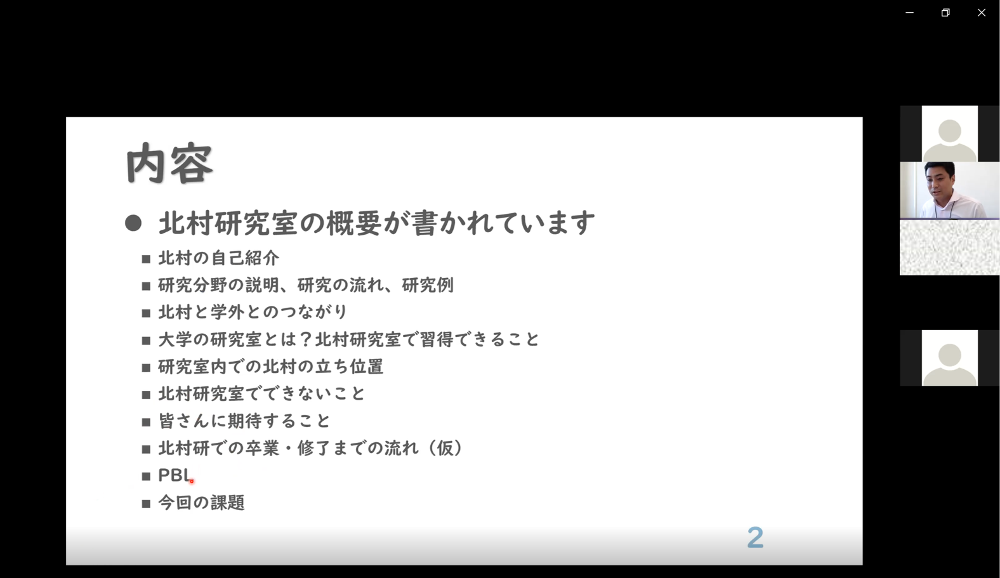

# 活動報告
先端社会デザインコース（FSDコース）で実施された活動を報告します．
# 2021年9月16日 ヒューマンインタフェース学会のWebサイトに北村執筆のエッセイが掲載されました
掲載日時:2021-09-23
ヒューマンインタフェース学会 (opens new window)では，HIな人たちが気ままに書き綴るエッセイ (opens new window)を月２程度の頻度でWebサイトに掲載しております．その第15回に北村執筆のエッセイが掲載されましたのでここにご報告いたします．
# 2021年9月13日 北村執筆の雑誌記事が大学院の入試問題に用いられました
掲載日時:2021-09-13
今年度の名古屋市立大学大学院芸術工学研究科の入試問題（令和3年度過去問題1次B類（小論文））に，北村が2020年に執筆した記事が資料として用いられました． 記事では，観光客の体験「観光エクスペリエンス」を高めるにあたってのアプローチについて解説しています． 大変光栄に思いますが，引用年度が2020のところ，2002になっているのをここで指摘しておこうと思います． この記事が少しでも目に触れ，「観光エクスペリエンス」への取り組みが活性化することを願ってます．
過去入試問題 | 名古屋市立大学芸術工学部 大学院芸術工学研究科 (opens new window)
該当記事：北村尊義: 観光エクスペリエンスへの挑み，ヒューマンインタフェース学会誌，Vol.22, No.2, pp.4-5, 2020. (opens new window)
# 2021年8月26日 新任教員の挨拶が香川大学創造工学部のWebサイトに掲載されました
掲載日時:2021-09-13
8月の出来事になりますが，香川大学創造工学部ウェブサイト (opens new window)のお知らせ欄に北村の新任教員挨拶を掲載していただきました． 内容は本サイトの掲載内容と大差ないのですが，北村の研究ルーツを加筆しております．
# 2021年8月30日 第5回ヒューマンメディア合同研究会
掲載日時:2021-08-31
8月30日，香川大学・立命館大学・福知山公立大学・龍谷大学・広島大学から5つの研究室が集まり，合同研究会を開催しました． 発表者は1回生8名，2回生1名，3回生3名，4回生16名の計28名でした． 香川大学（当研究室）からは大西晴子さん，蘆原渚咲さん，大玉美結衣さん，星隈泉穂さんが発表し，貴重な意見をいただきました． また，そのなかで蘆原さんが優秀賞を受賞しました！3回生以上を対象とした賞は2件しかなく，その確率は19分の2です！しかも3回生は当研究室だけという状況での快挙でした！
蘆原さん，おめでとうございます！！
なお，受賞テーマについては学会発表予定のため，非公開とさせてください．
# 2021年8月6日 オープンキャンパス
掲載日時:2021-08-19
8月3日，香川大学でオープンキャンパスイベントが開催され，当研究室もささやかながらブースを構えました． 当初，スマートウォッチの実装実演をし，装着してもらって体験していただく予定だったのですが，新型コロナ対応ということで簡単なデモンストレーションをするのみにとどめることになりました． しかし，どの参加者も熱心に聞いてくださり，とても嬉しかったです． ぜひ一緒に研究したいです．お待ちしてます！
# 2021年6月3日 3回生3名が研究室メンバーに加わりました
掲載日時:2021-06-07
6月3日，当研究室に3回生3名が加わりました． これで研究室のメンバーは北村も入れて6名になります． まだまだひよっ子研究室ですが，6名も集まると内輪でプチ実験をできそうな感じになってきますね． 新メンバーはみなUXへの関心が高いことについては共通していますが，やりたいことや興味のあるところはバラバラで， これからどのようなことができるのかとても楽しみです！どうぞよろしくお願いします！
# 2021年5月6日 PBLでの研究室紹介
掲載日時:2021-05-07

3回生向けの授業「PBL」にて北村の研究室の紹介を30分間しました． 新型コロナウィルスまん延防止ということで，今週からオンラインに変わっての発表となっております． 本当はもっと話したいこと，伝えたいことがあります．3回生のみならず，1,2回生の方々も興味があれば気軽に訪問連絡ください．
# 2021年4月初頭 学部生への新任教員挨拶
掲載日時:2021-04-10

新入生から4回生までの各学部生ガイダンスにて，新任教員として挨拶しました(残念ながら1回生の皆さんのガイダンスには出席できず，代読をお願いすることになりました．すみません！)．これから造形メディアデザインコースの皆さんと一緒にさまざまな活動をできるのが本当に楽しみです！よろしくお願いします！